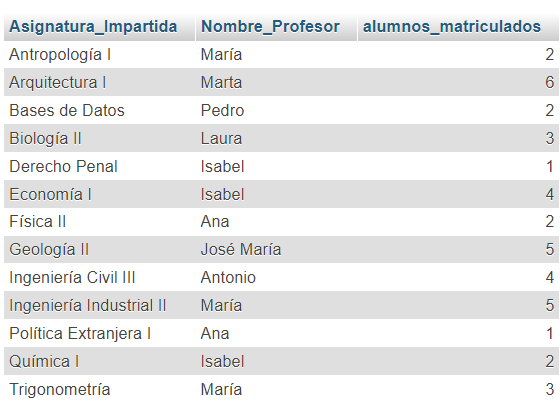
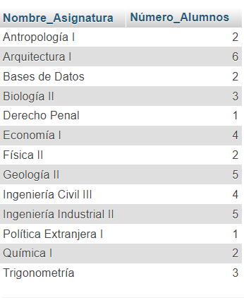
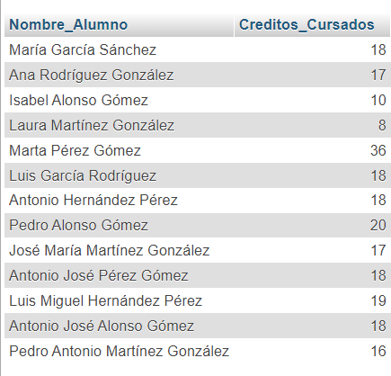
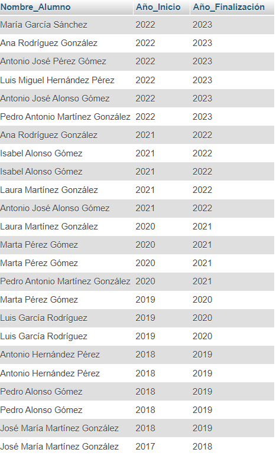
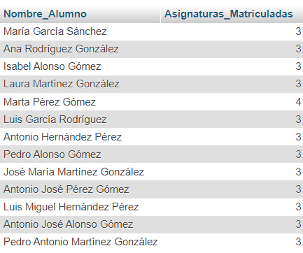
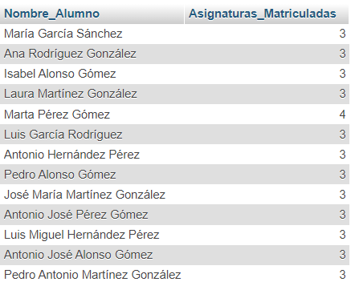
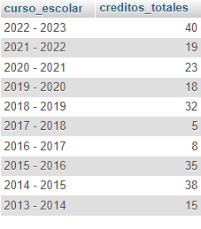

FROM asignatura
JOIN profesor ON asignatura.id_profesor = profesor.id_profesor
JOIN persona ON profesor.id_profesor = persona.id;
SELECT asignatura.nombre AS Asignatura_Impartida, persona.nombre AS Nombre_profesor
FROM asignatura
JOIN profesor ON asignatura.id_profesor = profesor.id_profesor
JOIN persona ON profesor.id_profesor = persona.id;
SELECT asignatura.nombre AS Asignatura_Impartida, persona.nombre AS Nombre_Profesor, COUNT(alumno_se_matricula_asignatura .id_alumno) AS alumnos_matriculados
FROM persona, profesor,asignatura, alumno_se_matricula_asignatura
WHERE profesor.id_profesor = asignatura.id_profesor AND persona.id = alumno_se_matricula_asignatura.id_alumno AND alumno_se_matricula_asignatura.id_asignatura = asignatura.id
GROUP BY asignatura.nombre;
SELECT asignatura.nombre AS Nombre_Asignatura, COUNT(alumno_se_matricula_asignatura.id_alumno) AS Número_Alumnos
FROM persona, asignatura,alumno_se_matricula_asignatura
WHERE persona.id = alumno_se_matricula_asignatura.id_alumno AND alumno_se_matricula_asignatura.id_asignatura = asignatura.id
GROUP BY asignatura.nombre;
SELECT asignatura.nombre AS Nombre_Asignatura, CONCAT(persona.nombre, ' ' , persona.apellido1, ' ' , persona.apellido2) AS Nombre_Alumnos
FROM persona, asignatura, alumno_se_matricula_asignatura
WHERE persona.id = alumno_se_matricula_asignatura.id_alumno AND alumno_se_matricula_asignatura.id_asignatura = asignatura.id
GROUP BY asignatura.nombre;
SELECT asignatura.nombre AS Nombre_Asignatura, COUNT(*) AS Alumnos_Matriculados
FROM persona, asignatura, alumno_se_matricula_asignatura
WHERE persona.id = alumno_se_matricula_asignatura.id_alumno AND alumno_se_matricula_asignatura.id_asignatura = asignatura.id AND asignatura.nombre = "Trigonometria";
SELECT CONCAT(persona.nombre, ' ' , persona.apellido1, ' ' , persona.apellido2) AS Nombre_Alumno, SUM(asignatura.creditos) AS Creditos_Cursados
FROM persona, asignatura, alumno_se_matricula_asignatura
WHERE persona.id = alumno_se_matricula_asignatura.id_alumno AND alumno_se_matricula_asignatura.id_asignatura = asignatura.id
GROUP BY persona.id;
SELECT CONCAT(persona.nombre, ' ' , persona.apellido1, ' ' , persona.apellido2) AS Nombre_Profesor, departamento.nombre AS Nombre_Departamento
FROM persona, profesor, departamento
WHERE persona.id = profesor.id_profesor AND profesor.id_departamento = departamento.id;
SELECT CONCAT(persona.nombre, ' ' , persona.apellido1, ' ' , persona.apellido2) AS Nombre_Alumno, curso_escolar.anyo_inicio AS Año_Inicio, curso_escolar.anyo_fin AS Año_Finalización
FROM persona, alumno_se_matricula_asignatura, curso_escolar
WHERE persona.id = alumno_se_matricula_asignatura.id_alumno AND alumno_se_matricula_asignatura.id_curso_escolar = curso_escolar.id;
SELECT CONCAT(persona.nombre, ' ' , persona.apellido1, ' ' , persona.apellido2) AS Nombre_Alumno, COUNT(*) AS Asignaturas_Matriculadas
FROM persona, alumno_se_matricula_asignatura, asignatura
WHERE persona.id = alumno_se_matricula_asignatura.id_alumno AND alumno_se_matricula_asignatura.id_asignatura = asignatura.id
GROUP BY persona.id;
SELECT CONCAT(persona.nombre, ' ' , persona.apellido1, ' ' , persona.apellido2) AS Nombre_Alumno, asignatura.nombre AS Asignaturas_Matriculadas
FROM persona, alumno_se_matricula_asignatura , asignatura
WHERE persona.id = alumno_se_matricula_asignatura.id_alumno AND alumno_se_matricula_asignatura.id_asignatura = asignatura.id
GROUP BY persona.id;
SELECT SUM(creditos) AS Creditos_Totales
FROM asignatura;
SELECT CONCAT(curso_escolar.anyo_inicio, ' - ', curso_escolar.anyo_fin ) AS curso_escolar, SUM(asignatura.creditos) AS creditos_totales
FROM alumno_se_matricula_asignatura
JOIN curso_escolar ON alumno_se_matricula_asignatura.id_curso_escolar = curso_escolar.id JOIN asignatura ON asignatura.id = alumno_se_matricula_asignatura.id_asignatura
GROUP BY alumno_se_matricula_asignatura.id_curso_escolar;
SELECT persona.nombre AS nombre_alumno, GROUP_CONCAT(grado.nombre SEPARATOR ', ') AS grados_matriculados
FROM alumno_se_matricula_asignatura
JOIN persona ON persona.id = alumno_se_matricula_asignatura.id_alumno JOIN asignatura ON asignatura.id = alumno_se_matricula_asignatura.id_asignatura JOIN grado ON grado.id = asignatura.id_grado
GROUP BY persona.id;